im a highschool student who likes making silly websites, watchin animes, and playing computer games. this website was made while on a trip and is a place to put things ive worked on or want to work on. i am a big fan of miku and her songs, my favorite song right now is hito mania which is not a miku song but close enough. i want to learn how to draw in a manga style, i really like the art styles in oniichan wa oshimai and non non biyori. i really like dense cities with public transportation, trains, and small towns in the country.
i am currently practicing archery (olympic recurve) but also want to get into rock climbing. i used to do it but stopped for no particular reason, its fun and seems healthy. i also like cooking though im not very good but want to get better. recently i have made frided rice and vegetable tempuras. my favorite foods are onigiri and karaage.
my favorite games are celeste, hollow knight, omori, and undertale, but i mostly play minecraft now. a really good celeste map is celestial column. ive also played through doki doki literature club and katawa shoujo which are both very good visual novels that more people should play through. especially katawa shoujo :3